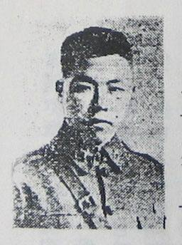

Toggle navigation
首页
HOME
文化风情
CULTURE
山水之间
SCENERY
美食聚焦
DELICACY
乡土论坛
FORUM
注册/登录
登录
账户：
密码：
忘记密码？
台州历史
乡贤名士
文化遗产
民俗风情
乡贤名士
FAMOUS PERSON
济公(李修缘)
济公（1148年—1209年），原名李修缘，南宋高僧，浙江省天台县永宁村人，后人尊称为-济公。他破帽破扇破鞋垢衲衣，貌似疯癫，初在国清寺出家，后到杭州灵隐寺居住，随后住净慈寺，不受戒律拘束，嗜好酒肉，举止似痴若狂，是一位学问渊博、行善积德的得道高僧被列为禅宗第五十祖，杨岐派第六祖，撰有《镌峰语录》10卷，还有很多诗作，主要收录在《净慈寺志》、《台山梵响》中。懂医术，为百姓治愈了不少疑难杂症。
杜范
杜范（1182～1245）南宋大臣。字成之，号立斋，谥清献，台州黄岩（今属浙江）杜家村人。嘉定元年进士。历官殿中侍御史、吏部侍郎兼中书舍人、同知枢密院事、右丞相兼枢密使。2006年12月，杜范墓在黄岩被发现。杜范，字成之，黄岩人。少从其从祖熚、知仁游，从祖受学朱熹，至范益著。嘉字定元年举进士，调金坛尉，再调婺州司法。绍定三年，主管户部架阁文字。六年，迁大理司直。
王天祥

王天祥(1906～1937），字天翔，浙江省黄岩乌岩区宁溪乡(今黄岩区宁溪镇）后街人。1906年出生于商人家庭。父亲王仲华为人正直，一生仰慕民族英雄文天祥的浩然正气，因此将独生子取名“天祥”，希望他将来能像文天祥那样建功立业，忠贞报国。王天祥童年就读于宁溪天香堂初级小学和南渠高级小学他勤奋好学，热情豪爽，琴棋书剑，一学即通，颇善书法，尤擅双钩。
林蔚
林蔚，字蔚文，1889年生于浙江台州黄岩。林蔚先后在南京江南水师学堂工程科和陆军大学第四期毕业，后返回浙江老家，担任的浙军工兵营营长。随后，由于受到时任浙军第一师师长陈仪的看中，曾担任浙军第一师参谋长。
上一页
1
2
3
4
下一页
查看更多
首页
一键拨号
QQ咨询
发送短信